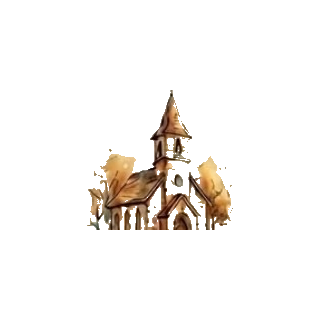
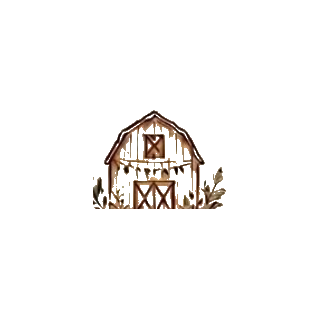

Ne căsătorim
· 17 ·
Octombrie 2026
O zi de toamnă, iubire, familie, prieteni dragi și o seară pe care vrem să o ținem minte mereu.
Confirmă participareaDin toate drumurile, orașele, planurile și întâmplările, ne-am găsit unul pe celălalt. Pe 17 octombrie 2026 vrem să sărbătorim iubirea noastră alături de oamenii care ne sunt aproape.
Vă așteptăm cu emoție, bucurie și chef de dans, într-o seară de toamnă la The Sunset Barn.
Am pregătit o zi simplă, frumoasă și plină de momente dragi.

Cununia religioasăBiserica Sfântul Fanurie
Strada Cerceluș 18, București
ORA 14:30
PetrecereaThe Sunset Barn
Str. Libertății, Bălăceanca
ORA 18:00Ca să ajungeți ușor la noi, am pus mai jos linkurile directe către Google Maps.
Prezența voastră înseamnă enorm pentru noi.
Vă rugăm să ne confirmați participarea până la data de
30.09.2026
Până la ziua în care spunem „da”.